External Motions Planner
This guide walks you through setting up an external motions planner in the CPM Lab. It assumes you installed the CPM Lab using Install from Debian Packages and want to use an integrated motion planner.
Note
Prerequisites: have ROS2 sourced (see your distribution), the CPM Lab packages installed, and the RViz configuration.
1. Launch RViz
Download the CPM-Lab RViz configuration and launch RViz with your ROS2 setup.
source /opt/ros/<ros2-distro>/setup.bash
export ROS_DOMAIN_ID=21
rviz2 -d <path-to-rviz-config>
2. Configure the Control Center
When you start the Control Center you may be presented with a few configuration screens.
{kind=link}
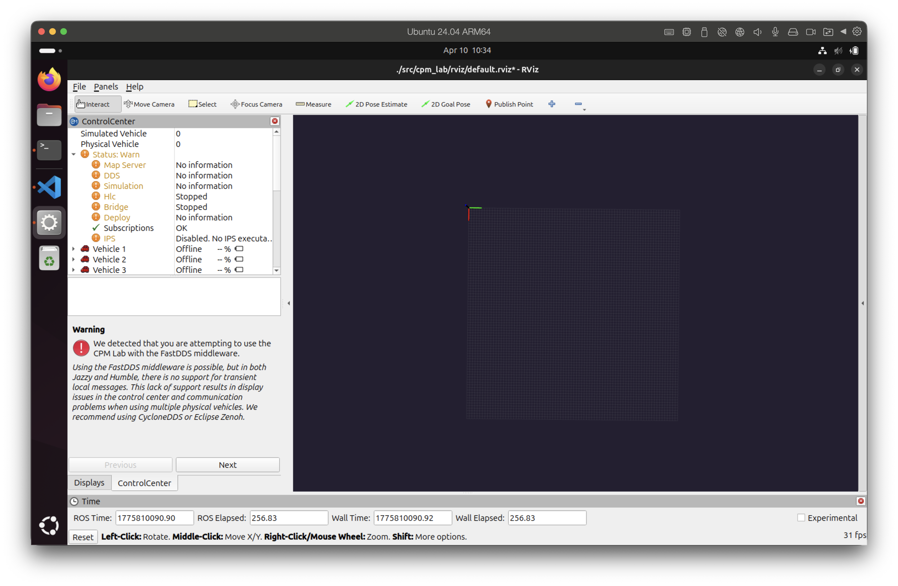
FastDDS Warning Screen
Note
The warning about FastDDS is expected if you have not switched to an alternative RMW implementation. You can choose to ignore the warning and continue with FastDDS, but we recommend switching to CycloneDDS or Zenoh for a more stable experience. If you switch to an alternative RMW implementation you will not see this warning.
{kind=link}
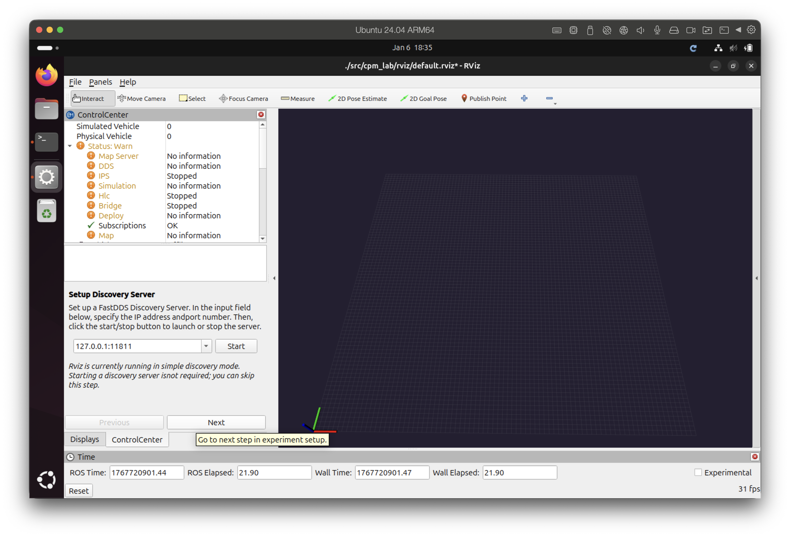
FastDDS Discovery Server Setup Screen
Note
The FastDDS Discovery Server is an advanced discovery mode and is not required for a basic simulation. You can skip it for typical simulation runs. We again recommend switching to an alternative RMW implementation instead of using FastDDS for a more stable experience. If you switch to an alternative RMW implementation you will not see this screen.
{kind=link}
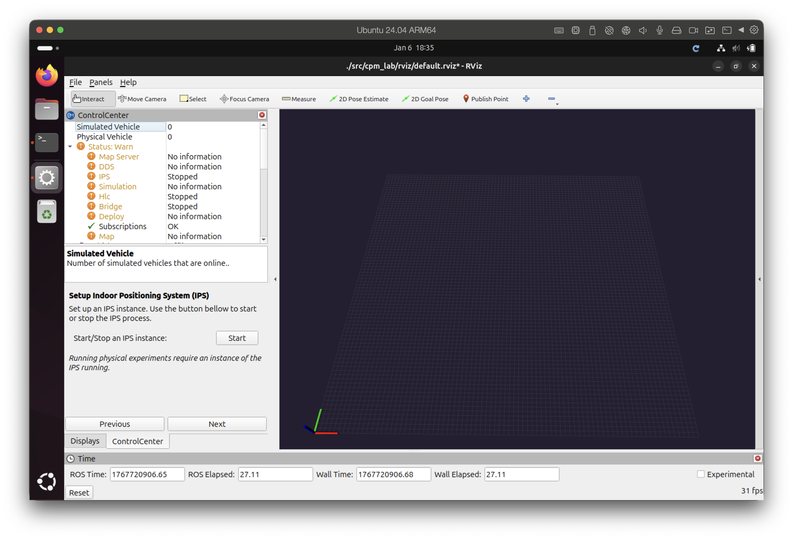
Indoor Positioning System Setup Screen
Note
If you installed the indoor positioning package the Control Center may prompt to start it. For simulations this is optional and can be skipped.
Next, select the map to use for the simulation (maps starting with “Lab” are provided). In this guide we chose “Lab Outer Circle”. Click Start to launch the map server.
{kind=link}
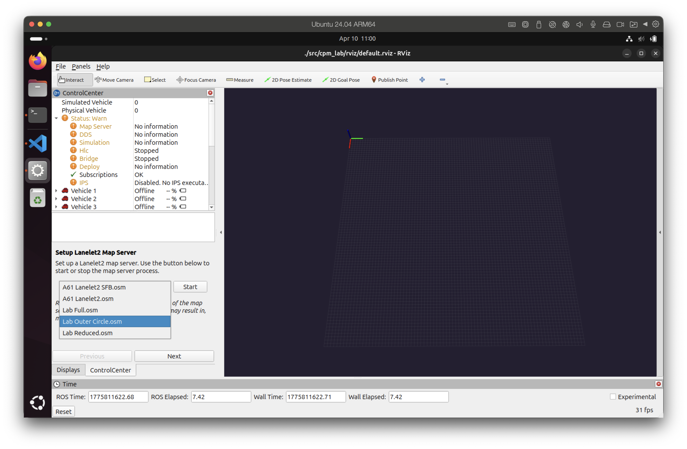
Map Selection Screen
Warning
If you run FastDDS as the RMW implementation the map might not appear in RViz due to known QoS incompatibilities. The simulation and planners still work; the missing map is a display issue.
{kind=link}
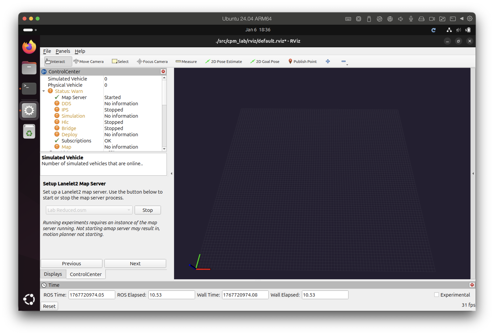
Map not displayed in RViz with FastDDS
If you are using CycloneDDS or Zenoh you should see the map in RViz immediately.
{kind=link}
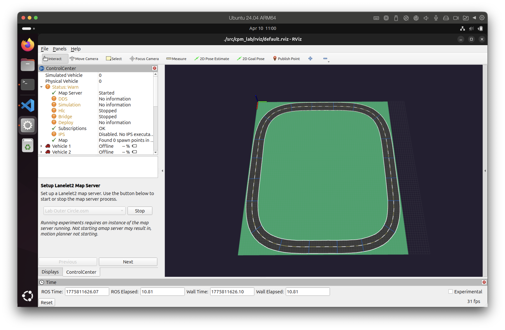
Map displayed in RViz with CycloneDDS
After the map server is running, start one or more vehicle simulations. Select the vehicle(s) in the Control Center selection screen and click Start.
{kind=link}
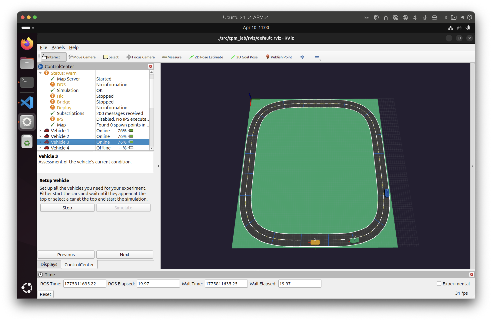
Vehicle Selection Screen
Start a motion planner next. Uncheck “Use internal ROS2 HLC” and simply click “Next” to proceed to the experiment setup screen.
{kind=link}
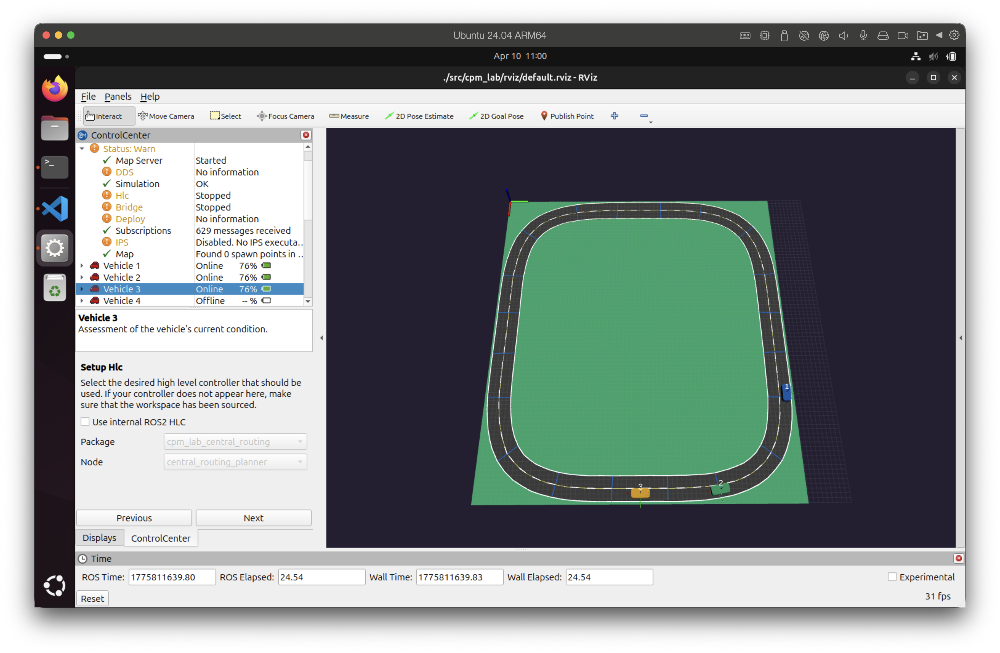
Motion Planner Selection Screen
Open a second terminal and start your external motion planner. Make sure to source ROS2 and set the ROS_DOMAIN_ID to 1.
source /opt/ros/<ros2-distro>/setup.bash
export ROS_DOMAIN_ID=1
ros2 launch cpm_lab_sfb_py sfb_planner.launch.py vehicle_ids:=[1,2,3] period:=100
Note
The example above launches the sfb motion planner with a 100ms update period for vehicles 1, 2, and 3. Adjust the command as needed for your specific motion planner and configuration.
{kind=link}
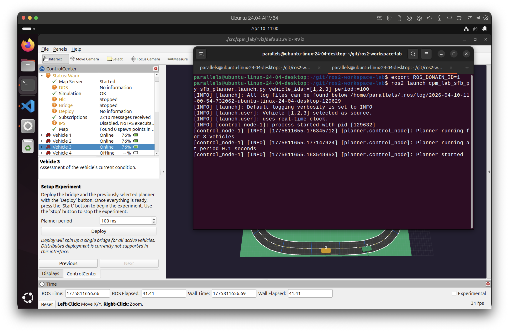
Motion Planner in Second Terminal
In the experiment setup screen you can set the motion planner update rate (ms) and start the bridge by clicking “Deploy”. The bridge will query each component (vehicles and planner) for readiness; once all components report ready the Control Center enables the “Start” button. If you use FastDDS you may then also see the map in RViz. You should see the motion planner communicate with the Control Center in the terminal output.
{kind=link}
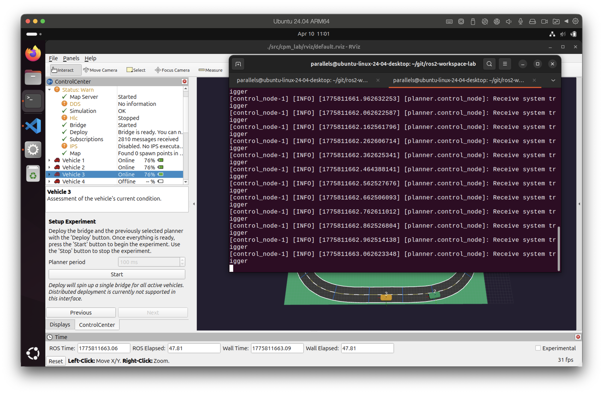
Experiment Setup Screen
Click “Start” to begin the simulation. Vehicles should move in RViz according to the motion planner commands.
{kind=link}
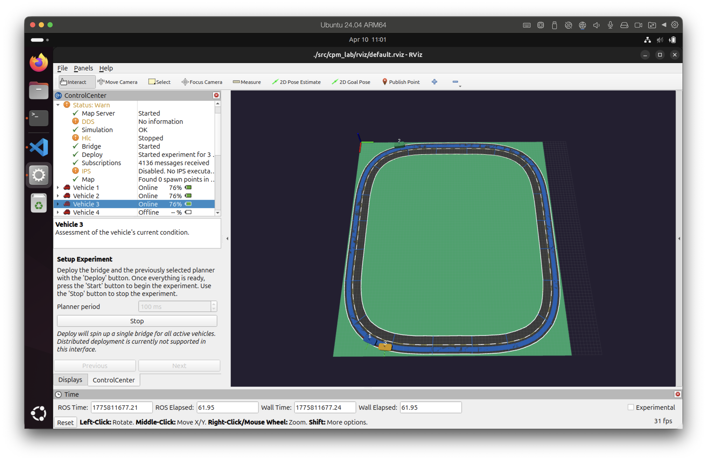
Simulation Running in RViz
Click “Stop” to stop the simulation. You should see the motion planner stopping as well. Closing RViz will also close the Control Center and any components it started but not the external motion planner you started in the second terminal. You can stop the motion planner with Ctrl+C in its terminal.
{kind=link}
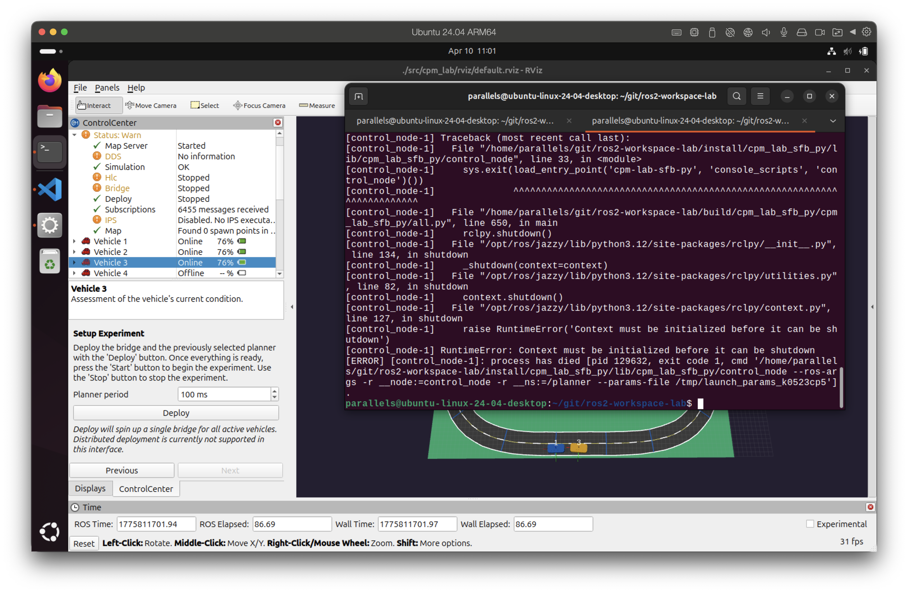
Simulation Stopped
Optional: Advanced Discovery Modes
Using FastDDS Discovery Server
Export the discovery server address before launching RViz and use the same address when starting the FastDDS Discovery Server in the Control Center. Components started by the Control Center will use that discovery server address automatically.
source /opt/ros/<ros2-distro>/setup.bash
export ROS_DOMAIN_ID=21
export ROS_DISCOVERY_SERVER=<ip-address>:11811
rviz2 -d <path-to-rviz-config>
Using Eclipse Zenoh
Start the Zenoh router in a separate terminal before launching RViz. You only need to start the router once and keep it running for all Zenoh-based ROS2 communication.
export RMW_IMPLEMENTATION=rmw_zenoh_cpp
ros2 run rmw_zenoh_cpp rmw_zenohd
Then, in a second terminal, set the RMW implementation to Zenoh and launch RViz:
source /opt/ros/<ros2-distro>/setup.bash
export ROS_DOMAIN_ID=21
export RMW_IMPLEMENTATION=rmw_zenoh_cpp
rviz2 -d <path-to-rviz-config>
Using CycloneDDS
Set the RMW implementation before launching RViz:
source /opt/ros/<ros2-distro>/setup.bash
export ROS_DOMAIN_ID=21
export RMW_IMPLEMENTATION=rmw_cyclonedds_cpp
rviz2 -d <path-to-rviz-config>